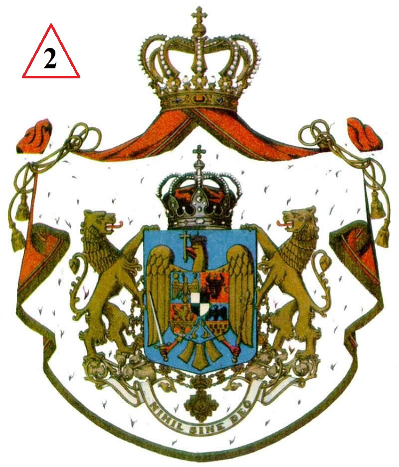
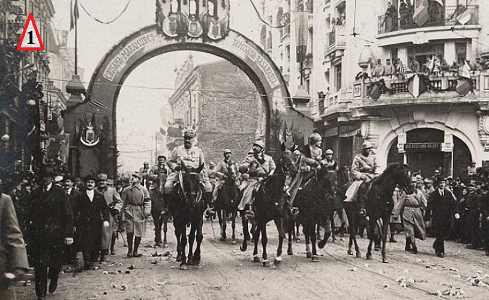

 
1. Intrarea triumfală a Regelui Ferdinand și a Reginei Maria în Bucuresti, 18 nov./1 dec. 1918. Fotografie de epoca
2. Stema României Mari
3. "Am moștenit o țara independentă, și chiar pentru a-i întinde granițele, nu-i putem jertfi neatârnarea."
(Ion I. C. Brătianu catre M. Pherekide, 3 iunie 1919, în timpul tentativelor de Pace de la Paris)
4. "Punând pe capul meu, într-această straveche cetate a Daciei romane, coroana de la Plevna, pe care noi și glorioase lupte au facut-o pe veci coroana României Mari, mă închin cu evlavie memoriei celor care, în toate vremurile și de pretutindeni, prin credința lor, prin munca și prin jertfa lor, au asigurat unitatea națională și salut cu dragoste pe cei care au proclamat-o intr-un glas și o simțire de la Tisa pana la Nistru și pana la mare. Într-aceste clipe, gândul meu se îndreaptă cu recunoștintă către viteaza și iubita noastră armată. Pentru răsplata trudelor trecutului, rog Cerul ca poporul nostru să culeagă în pace roadele lor binecuvântate și să propășească în liniște, frăție și muncă harnică..."
(Proclamația Regelui Ferdinand cu prilejul încoronării sale la Alba Iulia, 1992)
5. România Mare
6. "În numele poporului Basarabiei, Sfatul Țării declara: Republica Democratica Moldovenească, în hotarele ei (...) rupta de Rusia acum o suta și mai bine de ani din trupul vechii Moldove, in puterea dreptului de neam, pe baza principiului, ca noroadele singure sa-si hotarasca soarta lor , de azi înainte și pentru totdeauna se uneste cu Mama sa România. Această unire se face pe urmatoarele baze: 1. Sfatul Țării actuale ramâne mai departe pentru dezvoltarea, rezolvarea și realizarea reformei agrare, după nevoile și cererile norodului (...) 6. Respectarea drepturilor minorităților din Basarabia (...) 8. Basarabia va trimite în Parlamentul Român un numar de reprezentanți proportional cu populația aleși pe baza votului universal, egal, direct și secret(...) 10. Libertatea personală, libertatea tiparului, a cuvântului, a credinței, a adunărilor și toate libertățile obștesti vor fi garantate prin Constituție."
(Declarația de unire a Basarabiei cu România, 27 martie/19 aprilie 1918)
7. " I. Adunarea națională a tuturor românilor din Transilvania, Banat și Țara Ungurească, (...) decretează unirea acelor români și a tuturor teritoriilor locuite de dânsii cu România.
II. (...) Adunarea națională proclama urmatoarele: 1. Deplina libertate natională pentru toate popoarele conlocuitoare (...) 2. Egala îndreptățire și deplina libertate autonoma confesională pentru toate confesiunile din stat. 3. Înfăptuirea desăvârșită a unui regim curat democratic pe toae terenurile vietii publice. Votul obștesc, direct, egal, secret, pentru ambele sexe în varsta de 21 de ani. 4. Desăvârșita libertate de presa, libertate de asociere si întrunire: libera propagandă a tuturor gândurilor omenești. 5. Reforma agrara radicală"
(Rezoluția Marii Adunări Naționale de la Alba Iulie, 18 noiembrie/ 1 decembrie 1918)
8. "Drept aceea noi, Congresul General al Bucovinei, întrupând suprema putere a țării și fiind singuri cu puterea legiuitoare, în numele suveranității naționale, hotărâm: Unirea necondiționata și pe vecie a Bucovinei în vechile ei hotare (...) cu regatul României."
(Moțiunea de unire a Bucovinei cu România, 15/28 noiembrie 1918)
9. "Desăvârșirea unității naționale a României a capătat astfel recunoaștere internațională prin tratatul de la Saint Germain-en-Laye cu Austria- care recunoștea unirea Bucovinei cu România -, semnat la 10 decembrie 1920 (celelalte puteri îl semnaseră la 10 decembrie), prin tratatul de la Trianon, cu Ungaria- care recunoștea unirea Transilvaniei cu România, semnat la 4 iunie 1920, și tratatul de la Paris, prin care Franța, Marea Britanie, Italia și Japonia (care nu l-a ratificat însă) recunoșteau unirea Basarabiei cu România, semnat la 28 octombrie (dar de România la 10 decembrie 1919), a reconfirmat, printre altele, frontiera româno-bulgară din 1913."
(Florin Constantiniu, O istorie sinceră a poporului roman)